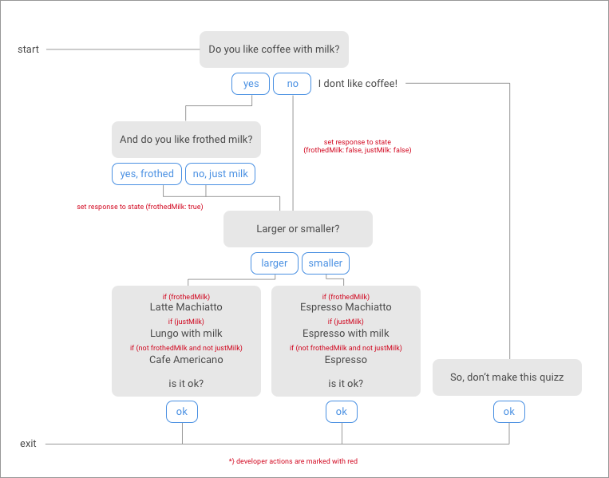
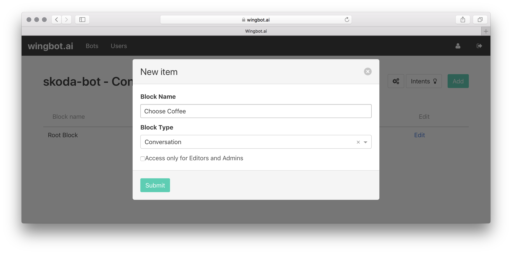

Advanced conversation tree
Let's have this conversation tree. The purpose is simple - choose the right coffee. Here is a diagram.

Add a new Conversation tree
- click on "add button" on bot page and name the tree "Choose Coffee"

- then continue with "Edit" button
Create the starting Interaction
- in the tree, there will be already first "entry point" - let's start here
- add the Message box with two quick replies
- connect "Yes" reply to a new Interaction "With milk"
- connect "No" reply to new Interaction "Without milk"

Make the "With milk" Interaction
- create the Message box with two quick replies
- each new quick reply will need own new Interaction - "Frothed milk chosen" and "Just milk chosen"

Create the "Coffee size" Interaction
- at the bottom of tree, create a new Interaction and name it "Coffee size"
- create the Message box with two quick replies
- each new quick reply will need own new Interaction - "Small coffee" and "Large coffee"

Interconnect previously created Interactions with "Coffee size" Interaction
- create "Go to" blocks at interactions "Without milk", "Frothed milk chosen" and "Just milk chosen"
- "Go to" links should lead to "Coffee size" Interaction

Create the exit interaction - "Finished"
- call it "Finished"
- put a new Exit Block into the interaction and call it "User leaved"

Fill the "Small coffee" and the "Large coffee" interactions
- insert texts, which will be conditionally shown (three for each card)
- insert "Is it ok?" call to action with "Ok" quick reply leading to newly created "Finished" Interaction
- point "Ok" quick reply to "Finished" interaction with previously defined exit point.
- now, messages will be sent sequientially - it's required to let developer set conditions

FOR DEVELOPERS: set responses to state
- there are three interactions within the state has to be set: "Without milk", "Frothed milk chosen" and "Just milk chosen"
- put a "snippet" in each of theese interaction
- decribe a snippet as much as descriptive: "set withMilk to conversation state"
- fill the snippet with following code
(req, res, postBack) => { res.setState({ withMilk: false, frothedMilk: false }); return Router.CONTINUE; }
FOR DEVELOPERS: set up conditions for messages
- each message can be conditionally shown or hidden
- to enable condition, use carret beside the message box to show a "has condition"
- use this snippet as condition
(req, res) => { return !req.state.withMilk && !req.state.frothedMilk; }
Create an alternative response "No coffee at all"
When users are asked, whether they prefer milk or not and responses they do not like coffee.
- make a new interaction and drag it below the "Choose Coffee entry point" - it's better to keep interactions organised
- toggle the switch to Responder
- choose "Choose Coffee entry point" as Reaction to
- click the "Keyboard" button and write examples of user's message: "do not like coffe", e.t.c.
- insert a Message interaction and point "ok" answer to "Finished" interaction

Include the "Choose coffee" conversation tree in the Root Block
- go to "Root block" at the bot's homepage
- create a new interaction and move it before "Fallback", when there is one
- name it "Choose coffee" for example
- insert an "Include" block into the interaction and choose "Choose coffee" subtree
- now you can configure exit point "User leaved"
- for example, send a message and redirect user to "Start"

Make interaction accessible by AI & from Start
- now you can make a new Quick reply at start and point it to "Choose coffee" interaction
- you can also use Keyboard button and create the new intent by filling example texts like "choose me a coffee"

How it works?